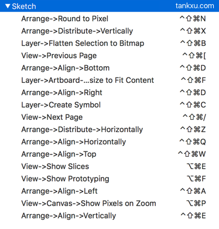

The First rule change the spacebar to the Command+Shift+Ctrl combination, and only effected in the sketch app. You can custom the sketch shortcuts in the system preference with key combination like Command+Shift+Ctrl+A, and then press Spacebar with key A to use the shortcut.
Suggested shortcut preference: (@tankxu's sketch shortcut)
The Second rule is useful for HHKB user. Sketch offer the shortcut Fn+Arrow Left and Fn+Arrow Right to switch the artboard, but HHKB can't post these key combination. And the artboard switch function aren't be listed in the application's menu, so it can't be customed shortcut in the system preference.
The second rule can solve this problem. It can make the keyboard post Fn+Arrow Left key combination when the Spacebar pressed with key semicolon and post Fn+Arrow Right key combination when the Spacebar pressed with key quote, Now you can use spcebar to switch the artboard. The second rule shoud be used with the first rule, and it need to be putted under the fisrt rule in the "Enable rules" list.